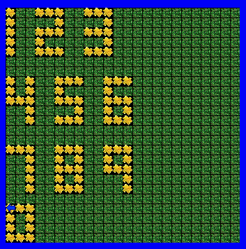

Jeroo Page
Unit 1:Basics
Fenced In

In the lesson, basics commands were supposed to be strung together so that the Jeroo moved from the coordinates 0,0 to the tip of the fences. This was done using a combination of turns(left and right) and hops. As a bonus, addition code could be added in order to give the Jeroo a flower to break the bottom of the net and escape the fence. The flower was given to the Jeroo when the instance of the Jeroo was created. The Jeroo was able to escape using the toss function when right in front of a net.

Diamond
For this exercise, the Jeroo was supposed to create a diamond shape spanning the width and height made of flowers. To do this, the Jeroo was set at the coordinates (0,11), with 47 flowers. Then, the Jeroo was programmed to hop, plant, turn, hop, turn and repeat. To be This was repeated until one side of the diamond was finished and the Jeroo reached the edge of the island. The Jeroo would then turn to face a different direction and repeat. When the diamond was finished, then the Jeroo would maneuver itself inside the diamond and face south.
Unit 2: Methods
LED
In this exercise, numbers 0-9 were to be created within a 3x5 area using flowers. Originally, I made two methods in order to make the numbers: a vertical and horizontal method. These would have the Jeroo face in a certain direction and plant 3 flowers in a row. However, I realized that it was unneccesary to have a method for moving in a certain direction; I could just have a method to move and plant flowers. So I just used the vertical method to have the Jeroo stay facing whatever direction it pointing, then hop and plant 3 times. I used this method in combination with turns to make methods for the numbers. Then, I created 3 additional methods to have the Jeroo make the numbers in a row. Additional code was needed for this method in order to reset the position of the Jeroo at X:0 at the start of the new row.

Great Escape
For this lesson, 4 Jeroos start in the center box. One method is supposed to be created that could be used
by all Jeroos so that they could escape from the box and reach the flowers at the corners of the island. To do this,
the Jeroo would first toss a flower to break the center box. They would then zig-zag throughout the maze. A method could
be made to make the process easier. For the constant turning, I created a "swerve" method, which had the Jeroo hop, turn
left, hop, and then turn right. This was continued until the Jeroo would reach the end of the row. The Jeroo woudl then
enter the next row and repeat.

Unit 3: Loops
Spiral
![](images/spiralbefore.png
<p>In this lesson, the Jeroo is supposed to spiral throughout the maze. The code would check if the path ahead
was clear; if so, then move forward. If the path is obstructed by water, then turn right. This was put on a
while loop until the Jeroo would reach a flower.</p>
<h2>Lockup<h2>
<p>In this exercise, 3 Jeroos would be spawned inside a box of nets. A fourth Jeroo was spawned outside and was
programmed to hop to the start of edge of the box, then detect if there is a flower ahead. If so, then hop, pick
up the flower, and check if a net is to the right. If there is, then turn right, toss the flower, then town left
again. Repeat the process until there is not a flower in front. Then, as long as there isn't a flower or water
ahead, hop, turn right, and hop. This should advance the Jeroo on the outside to the next side of the box. If the turns
and hops were executed and it's still clear in front, then it will repeat with small variance. This should advance
the Jeroo to the inner box. After all the flowers and nets are removed, all 4 Jeroos will turn east and run.
<h2>Unit 4: If Statements and Conditions</h2>
<h2>Alley Run<h2>
<p>For this lesson, the Jeroo would start at the left sid eof the screen. The Jeroo would check if flowers were
to the left or right. If there was, then the Jeroo would turn and pick it up and return to the path. It would then
it there is a net to the side. If there was, the Jeroo would turn and toss a flower on it. The Jeroo would then check
for water on the side. If there is, then the Jeroo would turn the opposite direction and place a flower. Then, the
Jeroo would move one step forward. This would repeat until there is water in front of the Jeroo.
<h2>Spiral Maze</h2>
<p>For this exercise, the Jeroo was supposed to move to the end of the maze, turn around, and then go back to the
start of the maze. To do this, the Jeroo would check if it is clear ahead; if it is, then hop. If not, then face the
path. Facing the path means checking left or right to see if there is a clear space. Whichever direction it is, then
turn. This will repeat until the Jeroo reaches the end of the maze, at which the front, left and right will not be clear.
At this point, the Jeroo will turn right twice and repeat until it reaches the start of the maze.
</section><!-- end Content -->
<!-- Aside Content -->
<aside id=)